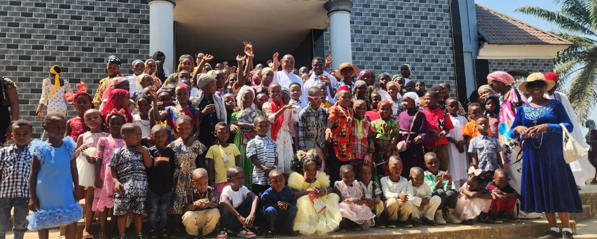

Our vision

Who we are
Twenty years of building schools where there were none.
CORAfrica is a development agency, registered as a 501(c)(3) in the United States and as an NGO in Nigeria. We believe a child’s education cannot be separated from their health, their food and their family’s income — so we build them together, and then hand the work on.
Our mission
To change the face of education and healthcare for indigent children in Africa, one community at a time.

Our logo
The map, and the light.
The seal carries the map of Africa, with an open book and a torch at its heart. The torch stands for the Light our programmes are meant to bring — the conviction that education is what changes a continent’s prospects, one community at a time. Around it runs our name and our motto: Education for Africa’s Future.
Our history
From a doctorate to a model that travels.
2006
Founded at Cornell
Fr. Peter Obele Abue, completing a doctorate in International Development at Cornell University, founds CORAfrica to close the gap he had watched open between the developed and the developing world. It is granted 501(c)(3) status that year, with a founding Board of Trustees of Bruno Schickel, Royal Colle, Thomas Lickona and Carolann Darling.
2006
The work moves to Nigeria
Fr. Peter returns home, and projects follow across the Diocese of Ogoja: the Sr. Augustina Abuo Memorial Medical Clinic at Idum-Mbube in 2007, beside St. Joseph’s school and orphanage, and Little Flower School at Ipong-Obudu.
2010
Registered in Nigeria
CORAfrica is incorporated under the Companies and Allied Matters Act on 6 September 2010 as a Registered Trustee of an NGO, certificate CAC/IT/NO 40479 — giving the work a legal footing in both countries it operates in.
2010s
Support from Western Pennsylvania
Ray Ferguson, Fr. Jim Murphy, Anne Goetler, Tom Rooney and Jeannine Goelz join. With Abode for Children Inc. of Evans City, led by Tom and Mary Rutkoski, they upgrade St. Joseph’s Schools and Orphanage and CORAfrica Farms.
2017
The John Stilley Schools
Nursery, primary and secondary schools open at Victoria, Ikom, where the community had none at all. The same year, Fr. Peter is honoured at Cross River@50, the state’s golden jubilee.
2020–22
Refugees and displaced families
A school for refugee children from Cameroon opens at Adagom; 1,000 refugees, migrants and displaced people are trained in agribusiness with UNHCR and the International Institute of Tropical Agriculture; and six classrooms are built in an IDP camp in Benue State.
Today
Handed on, and beginning again
The first two Community Education Centres, at Idum-Mbube and Victoria-Ikom, are being handed to the institutions that will run them from 2027. From our headquarters in Abuja, CORAfrica runs HELP-A-KID, its empowerment programmes, the school clinics, the demonstration farms, its skills acquisition centres and CORA Farms — and is building its next centre.

Our founder
Fr. Peter Obele Abue.
CORAfrica grew out of his doctoral research at Cornell, and out of the gap he had watched open between the developed and the developing world. Today the organisation is an independent initiative carrying on his purpose: the humanitarian mission of Christ, through an education with Christian values, brought to the poorest of the poor across Africa and beginning in Nigeria.
Our philosophy
Three convictions we build on.
CORAfrica’s philosophy is rooted in Catholic Social Teaching, and reduces to three core values that govern how we choose projects and how we hand them on.
Dignity of the human person
Each person — each child — has an inalienable dignity, and should be treated as an end and never only as a means. Every child deserves the chance to achieve their dreams, no matter where they were born.
Solidarity and the common good
Faced with globalisation and the growing interdependence of peoples, the universal human family remains one. We are obliged to increase our sensitivity toward children, especially those who suffer deprivation.
Self-reliance
We look for the explicit ways a community or institution can design its structures so that children and young people become independent — rather than relying permanently on outside intervention.
Accountability
Registered, audited, and on the record.
We are a registered charity in both countries we work in, our books are audited annually by an independent firm, and our accounts are available to funders on request.
Registered in Nigeria
Incorporated under the Companies and Allied Matters Act on 6 September 2010 as a Registered Trustee of an NGO. Certificate CAC/IT/NO 40479.
Registered in the United States
A 501(c)(3) non-profit, so gifts from US taxpayers are tax-deductible. EIN 68-0619454.
Independently audited
Our financial statements are audited by Akomaye Adie & Co., Chartered Accountants and Tax Practitioners, of Calabar.
92.6% to programmes
Of everything CORAfrica spent in the year ended 31 December 2025, 92.6% went to education, healthcare, economic empowerment and agriculture. Overheads were 7.4%.
Assets we hold
Land, school buildings, and a farm and agricultural station, carried in our 2025 accounts at about US $114,500.
Governed by two boards
A Board of Trustees in Nigeria and another in the United States oversee the organisation, with operations directed from our headquarters in Abuja.